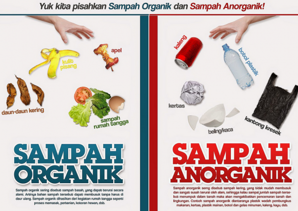

Langkah awal peduli lingkungan adalah dengan memilah sampah dari rumah. Secara umum, sampah dibagi menjadi dua kategori utama:
Sampah yang berasal dari sisa makhluk hidup yang mudah membusuk, seperti sisa makanan, daun kering, dan potongan sayur. Sampah ini bisa diolah menjadi kompos.
Sampah yang dihasilkan dari bahan non-hayati, baik berupa produk sintetik maupun hasil proses teknologi pengolahan bahan tambang. Contohnya: plastik, botol kaca, dan kaleng.
